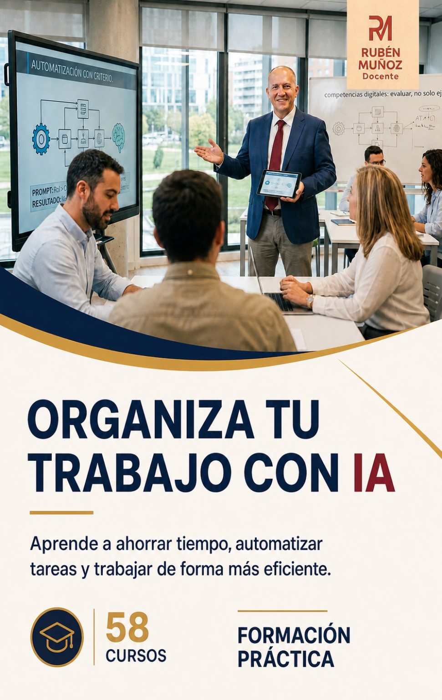

Ofimática, competencias digitales e inteligencia artificial aplicada a la educación.
Activa JavaScript para consultar el portfolio y sus actividades. También puedes contactar en rumuva1492@gmail.com.

Puedes cerrar con el botón o pulsando la tecla Esc.